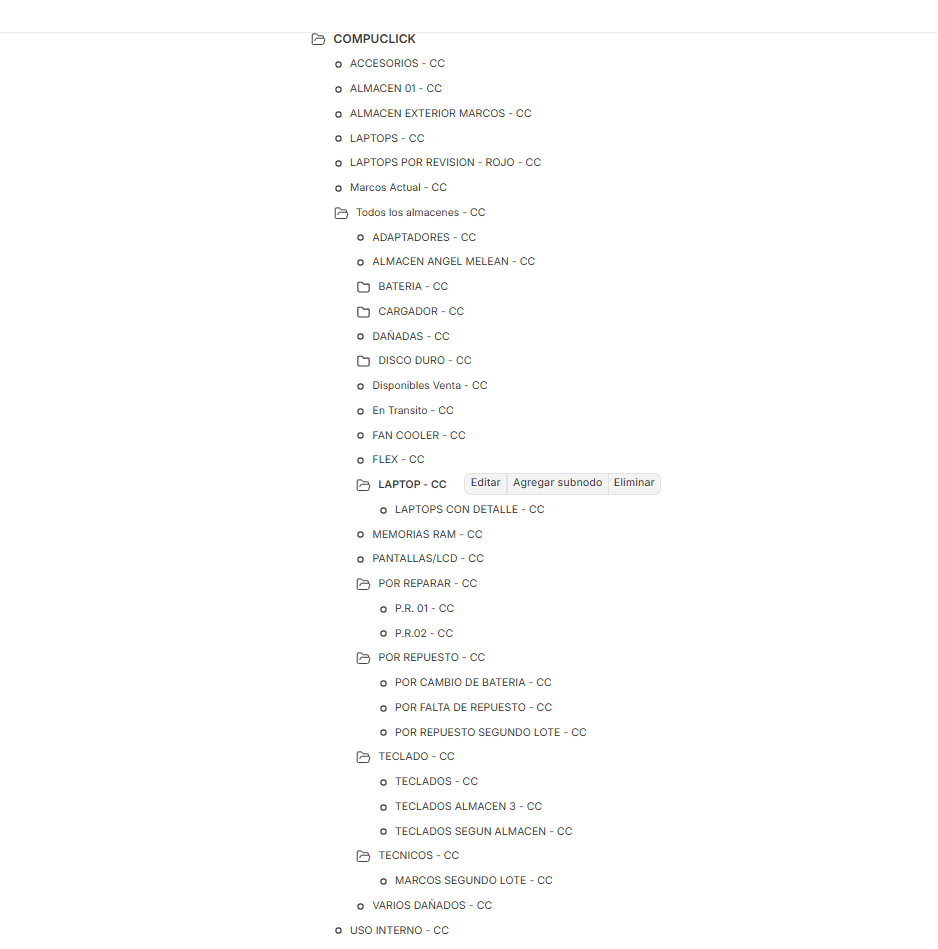
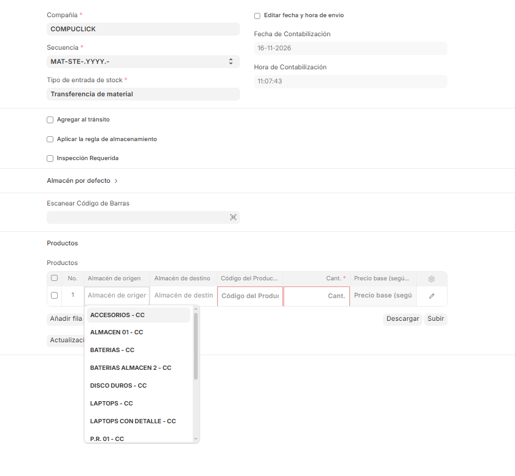
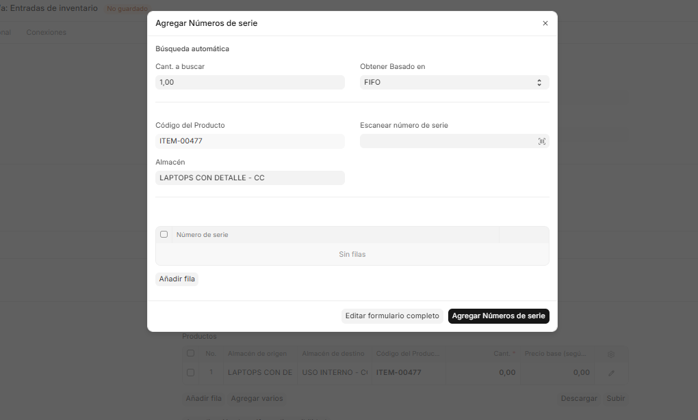

Concepto
Un traslado mueve stock de un almacén hoja a otro almacén hoja de la misma Company.
No hay cliente, no hay factura, no hay gasto. El valor del inventario no cambia: sale de un cuarto y entra a otro.
En ERPNext el documento es Entrada de existencias (Stock Entry) con tipo
Transferencia de material (Material Transfer).
Analogía Profit / Excel
En Profit era un movimiento entre almacenes (8 POR FALTA DE REPUESTO → Disponible).
En Excel movías la cantidad de una columna a otra.
Aquí queda un documento con quién, cuándo, de dónde, a dónde y qué IMEI.
Sí: Transferencia de material
P.R.02 - CC → Disponibles Venta - CC ·
En Transito - CC → LAPTOPS CON DETALLE - CC.
Misma Company (COMPUCLICK).
No uses traslado
Venta a sede Nuovocell = Factura de venta (otra Company). Sacar del ERP (ya no existe) = Reconciliación o Expedición. Regalo = Expedición tipo Regalo. Cambiar precio del IMEI = Reconciliación, no traslado.
Regla de oro
Siempre almacén hoja (el que tiene mercancía: DISPONIBLE - …, P.R.02 - CC).
Nunca el grupo (COMPUCLICK, BARUTA - NC).
El Cost Center debe ser de la misma Company (Principal - CC en docs CC).
02 · Mapa
Dónde vive la mercancía en Compuclick
Árbol live (nov 2026). Las carpetas son grupo: no se eligen en un traslado. Los puntos son hoja: ahí sí hay stock.

Foto 2.1 — Vista Árbol · Company COMPUCLICK. Carpeta = no elegir. Punto = origen o destino.
Carpetas — no usar en el traslado
COMPUCLICK
Todos los almacenes - CC
BATERIA / CARGADOR / DISCO DURO - CC
LAPTOP - CC
POR REPARAR - CC
POR REPUESTO - CC
TECLADO - CC
TECNICOS - CC
Hojas — sí (ejemplos de laptops)
En Transito - CC
LAPTOPS CON DETALLE - CC
Disponibles Venta - CC
LAPTOPS - CC
P.R.01 - CC · P.R.02 - CC
POR FALTA DE REPUESTO - CC
POR CAMBIO DE BATERIA - CC
USO INTERNO - CC
P.R.02 y “por falta de repuesto” no son lo mismoP.R.02 - CC está bajo POR REPARAR.
POR FALTA DE REPUESTO - CC está bajo POR REPUESTO.
El cuadre Profit almacén 8 de estas semanas se cargó en P.R.02 - CC. No mezcles los dos.
Flujo típico de un laptop (solo hojas):
En Transito - CCpagado, viaja
→
LAPTOPS CON DETALLEtriage / IMEI
→
Disponibles Venta - CClisto para FV
Disponibles Venta
→
P.R.02 - CCtaller / falta pieza
→
USO INTERNO / DAÑADASsi ya no se vende
03 · Pasos
Traslado directo (el de todos los días)
Úsalo cuando el equipo ya está en el almacén destino (o el movimiento es inmediato: del mostrador al taller, de P.R.02 a Disponible). Docs:
Stock Entry.
Entrada de existencias / Nuevo Validar
COMPUCLICK
Transferencia de material
☐ (vacío = traslado directo)
clic ▶ para origen y destino hoja
Item
Origen
Destino
Qty
Serial
ITEM-00193 ThinkPad 11e
P.R.02 - CC
Disponibles Venta - CC
1
1s20LRS0…4485
Almacén → Entradas de inventario → Nuevo
Awesomebar: escribe Stock Entry o Entrada de existencias.
Company COMPUCLICK
Si estás en BC/NC, el almacén - CC no va a cuadrar.
Tipo de entrada de stock: Transferencia de material
No Stock de apertura, no Expedición, no Recepción, no Reempaque.
Deja Agregar al tránsito sin marcar si el movimiento es inmediato.
Almacén por defecto (clic en la flecha)
Ahí pones origen y destino hoja de COMPUCLICK. Cada fila se rellena sola.
Si no los pones arriba, los eliges en la tabla de Productos (columna Almacén de origen / destino).
Fila: Item + cantidad
El costo (tasa) lo trae el sistema. No lo cambies aquí: el traslado no retasa.
Foto 3.1 — Company COMPUCLICK · tipo Transferencia de material · Agregar al tránsito vacío = directo

Foto 3.2 — En cada fila: origen, destino, código, cantidad. El desplegable lista hojas, no carpetas.
04 · IMEI
Si el artículo tiene serial
La cantidad es el número de IMEI. Si mueves 2 laptops, qty 2 y 2 seriales en el paquete. Los seriales del recuadro son los que salen del origen (no los que “quedan”, eso es reconciliación).
En la fila, abre el paquete Serial / Lote
O marca “Usar campos de número de serie” y pega un IMEI por línea.
Elige IMEI que ya están en el almacén origen
Si el serial está en otro almacén, el sistema no lo deja. Mira primero Número de serie filtrado por Item + origen.
Qty de la fila = cuántos IMEI pegaste
2 IMEI y qty 1 = error de bundle. 14 IMEI y el libro tiene 13 = no valides: hay cédula sucia (ese caso va a programador, no se arregla con traslado).
FIFO (sin serial)
Solo pones qty. El sistema baja las capas del origen. Accesorios, recargas, etc.

Foto 4.1 — Lápiz de la fila → Agregar números de serie. El Almacén debe ser el origen. Añadir fila, elegir IMEI, qty de la fila = cuántos IMEI.
En la captura
Origen LAPTOPS CON DETALLE - CC → destino USO INTERNO - CC, ítem ITEM-00477.
Todavía qty 0 y sin IMEI: falta Añadir fila y Validar. Así se ve el selector antes de llenarlo.
05 · Viaje
Cuando tarda en llegar (Add to Transit)
Si el camión tarda y quieres que desaparezca del origen hoy pero no aparezca en destino hasta que confirmen: dos documentos. Docs:
Goods in Transit.
Disponible origen
1
Almacén Tránsito
2
Disponible destino
Documento 1 — Sale
Transferencia de material + casilla Agregar al tránsito.
Origen = de dónde sale.
Destino = almacén tipo Transit.
Validar. Ya no está en origen.
Documento 2 — Llega
Abrir el doc 1 → End Transit
o Nuevo traslado → Obtener de → Transit Stock Entry.
Destino = almacén hoja real.
Validar cuando el equipo esté en la mano.
En Compuclick ya tienes la hoja En Transito - CC
Para importación pagada que aún viaja, el stock a menudo entra ahí con la factura de compra (Update Stock). Eso no es “Agregar al tránsito”: es la compra.
El traslado viene después: En Transito - CC → LAPTOPS CON DETALLE - CC → Disponibles Venta - CC.
Foto 5.1 — La casilla “Agregar al tránsito” está bajo el tipo. Vacía = traslado directo. Marcada = dos documentos (sale / llega).
06 · Casos
Qué documento en cada situación
Qué pasó en la vida
Origen → destino
Documento
Llegó el lote a Venezuela y se abre
En Transito - CC → LAPTOPS CON DETALLE - CC
Transferencia de material (pistolear IMEI si aún no tenían)
Pasó triage, listo para vender a sede
LAPTOPS CON DETALLE - CC → Disponibles Venta - CC
Transferencia de material
Se va a taller / espera pieza
Disponibles Venta - CC → P.R.02 - CC o POR FALTA DE REPUESTO - CC
Transferencia + IMEI. Elige un destino (son dos hojas distintas).
Uso interno / ya no se vende
→ USO INTERNO - CC o DAÑADAS - CC
Transferencia (sigue en inventario; no es baja)
Salió de Profit, no existe al migrar
—
No traslado. Reconciliación qty 0 o Expedición
Se lo lleva una sede Nuovocell
CC → sede NC
No traslado. Factura de venta + intercompany
07 · Cierre
Cómo sé que quedó bien
Después de Validar
1. En el documento: estado Enviado.
2. Stock Balance del origen: bajó esa qty / esos IMEI.
3. Stock Balance del destino: subió lo mismo. El valor total CC casi no cambia (solo se mueve).
4. Número de serie de cada IMEI: almacén = destino.
5. Mayor de inventario: una salida y una entrada el mismo voucher.
Errores típicos
Qué ves
Por qué
Qué hacer
No aparece el almacén en el desplegable
Es grupo, o es de otra Company
Elige la hoja … - CC. Cambia Company arriba.
Insufficient stock / serial not in warehouse
El IMEI no está en el origen
Lista Serial No: mira en qué almacén está. Traslada desde ahí.
Bundle qty ≠ Actual qty (−14 vs −13)
Cédulas Active vs libro (caso ThinkPad 11e)
No fuerces el traslado. Ese ítem va a programador / Administrador.
El destino es un grupo
COMPUCLICK, LAPTOP - CC, POR REPARAR - CC…
Usa la hoja: LAPTOPS CON DETALLE - CC, P.R.02 - CC, etc.
Cost Center - NC en un doc CC
Default del Item
Principal - CC (o el de esa Company).
Quién lo hace
Oscar / Andrea operan. Martin audita Stock Balance y seriales. María no interviene (no hay pago).